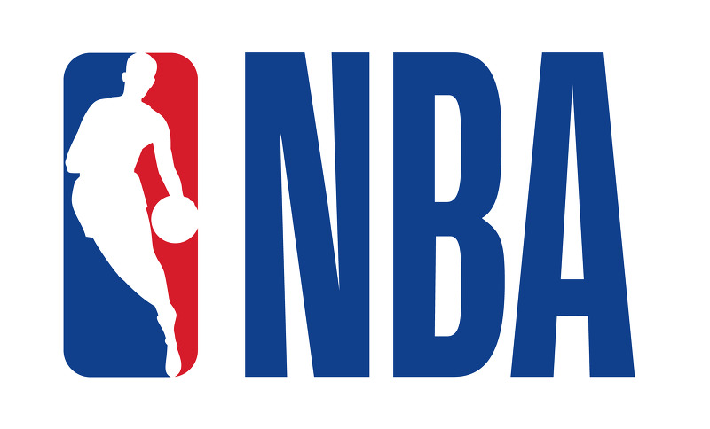

전미 농구 협회
전미농구협회(National Basketball Association)를 뜻하는 영문의 머리글자를 딴 약칭으로, 일반적으로 이 단체가 주관하는 프로농구 리그를 통칭한다. MLB(야구)·NFL(미식축구)·NHL(아이스하키)과 더불어 미국의 4대 스포츠 리그로 꼽힌다.

연혁
1946년 6월 11개 팀으로 구성된 BAA(Basketball Association of America)로 출범하였으며, 1949년 라이벌 리그였던 NBL(National Basketball League)을 흡수하여 17개 팀으로 재편성하면서 지금의 명칭을 사용하기 시작하였다. 이후 인기가 하락하여 1954년에는 8개 팀으로 줄었으나 24초 바이얼레이션 도입 등 흥미를 더하는 경기규칙 개정과 걸출한 흑인 선수들의 활약 등의 요인으로 서서히 인기를 회복하였다. 이에 힘입어 1960년대 말 14개 팀으로 늘어났으며, 1976년에는 ABA(American Basketball Association)를 흡수하여 22개 팀으로 확대되었다. 1980년대에는 매직 존슨과 래리 버드, 마이클 조던 등 절정의 기량을 지닌 선수들의 맹활약으로 미국뿐 아니라 전 세계적으로 인기를 끌게 되었다. 팀 수도 차츰 늘어나서 1995년 밴쿠버 그리즐리스(지금의 멤피스 그리즐리스)와 캐나다의 토론토 랩터스가 창단하여 29개 팀이 된 데 이어 2004년에는 샬럿 밥캣츠(지금의 샬럿 호니츠)가 창단하면서 30개 팀 체제를 갖추었다.
리그 구성
미국 29개 팀과 캐나다 1개 팀으로 구성된 30개 팀이 15팀씩 나뉘어 동부 컨퍼런스와 서부 컨퍼런스로 편성되며, 양대 컨퍼런스는 다시 각각 3개의 디비전으로 편성된다.
동부 컨퍼런스는 애틀랜틱·센트럴·사우스이스트의 3개 디비전으로 구성된다. 애틀랜틱 디비전에는 보스턴 셀틱스·브루클린 네츠·뉴욕 닉스·필라델피아 세븐티식서스·토론토 랩터스, 센트럴 디비전에는 시카고 불스·클리블랜드 캐벌리어스·디트로이트 피스턴스·인디애나 페이서스·밀워키 벅스, 사우스이스트 디비전에는 애틀랜타 호크스·샬럿 호니츠·마이애미 히트·올랜도 매직·워싱턴 위저즈가 소속되어 있다.
서부 컨퍼런스는 노스웨스트·퍼시픽·사우스웨스트의 3개 디비전으로 구성된다. 노스웨스트 디비전에는 던버 너기츠·미네소타 팀버울브스·오클라호마시티 선더·포틀랜드 트레일블레이저스·유타 재즈, 퍼시픽 디비전에는 골든스테이트 워리어스·LA 클리퍼스·LA 레이커스·피닉스 선스·새크라멘토 킹스, 사우스웨스트 디비전에는 댈러스 매버릭스·휴스턴 로키츠·멤피스 그리즐리스·뉴올리언스 펠리컨스·샌안토니오 스퍼스가 소속되어 있다.
리그 운영 및 경기 방식
대체로 10월 말에서 11월 초에 개막하여 정규시즌과 플레이오프, NBA 파이널을 치르며 이듬해 4~5월까지 약 6개월간 진행된다. 정규 시즌은 홈앤드어웨이 방식으로 팀당 82경기(같은 디비전에 속한 팀들과 4경기씩 16경기, 같은 컴퍼런스의 다른 디비전에 속한 10개 팀과 36경기, 다른 컴퍼런스에 속한 15팀과 2경기씩 30경기)를 치른다. 경기 시간은 12분씩 4쿼터로 총 48분이며, 공격 제한시간은 24초이다. 2쿼터를 마치면 하프타임 15분이 주어지고, 무승부일 경우 연장전 5분이 추가된다. 정규 시즌 중간에 올스타전을 치르고 약 1주일간 휴식한다. 정규 시즌이 끝나면 컨퍼런스 별로 승률이 높은 8개 팀이 플레이오프에 진출하여 7전4선승제의 토너먼트 경기를 치러 컨퍼런스 우승자를 가린 뒤 컨퍼런스 우승자끼리 7전4선승제의 NBA 파이널을 치러 최종 우승자를 가린다.
역대 기록
최다 우승 기록은 1959년부터 1966년까지 8연속 우승을 비롯하여 총 17회 정상에 오른 보스턴 셀틱스가 보유하고 있으며, LA 레이커스(16회)·시카고 불스(6회)·샌안토니오 스퍼스(5회)가 뒤를 잇는다. 최우수선수(MVP) 상을 가장 많이 수상한 선수는 카림 압둘자바(6회)이며, 빌 러셀과 마이클 조던이 각각 5회씩 수상하였다. 통산 최다득점 기록도 카림 압둘자바(3만 8387점)가 보유하고 있으며, 마이클 조던은 경기당 통산 평균득점(30.12득점) 부문에서 역대 1위이다. 윌트 체임벌린은 1경기 최다득점(100점), 1경기 최다 리바운드(55개), 한 시즌 최고 평균득점(50.4득점) 등 NBA 개인 최고 기록을 가장 많이 보유하고 있다. 최다 연승 기록은 1971-1972시즌에 LA 레이커스가 기록한 33연승이며, 최다 연패 기록은 2015-2016시즌에 필라델피아 세븐티식서스가 기록한 28연패이다.